El diputado socialista Txiqui Benegas confirmó hoy que las noticias respecto a que sufrió un intento de atentado por parte de ETA el pasado Lunes son ciertas , pero consideró una imprudencia su difusión.
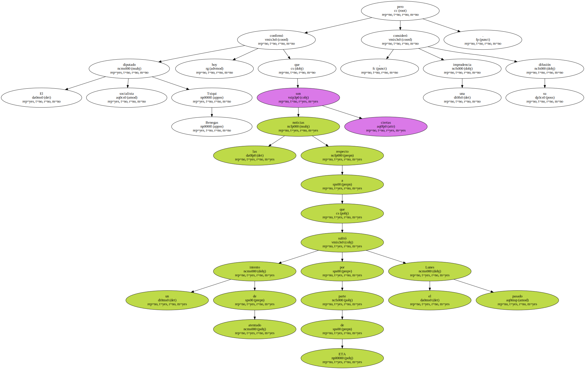Benegas , quien aseguró que seguirá " luchando por la paz y la libertad en primera fila en el País Vasco " , dijo que su pensamiento , " más allá de lo que me pueda ocurrir a mi , está con todas las víctimas de ETA ".
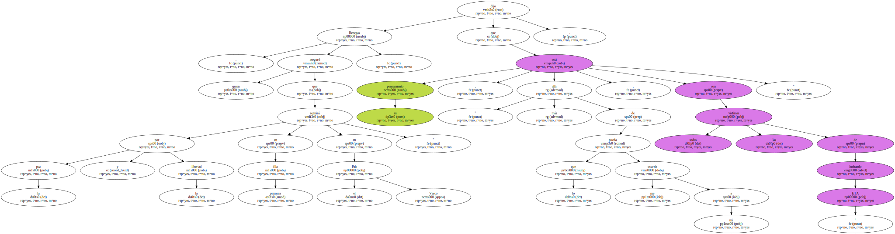Según informó hoy la Cadena Ser , Benegas sufrió un intento de atentado por parte de ETA en la portería de su vivienda el pasado lunes , un día después de que la organización terrorista asesinara en Andoain a José Luis López de Lacalle.
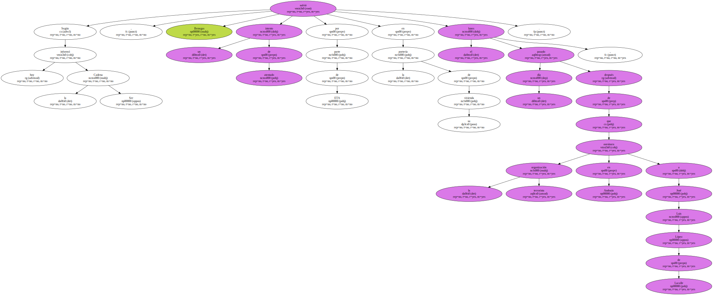El diputado socialista eludió referirse a más detalles de este intento de atentado , pero sí admitió que uno de sus escoltas reconoció en fotografías entre los sospechosos a un presunto miembro de ETA.
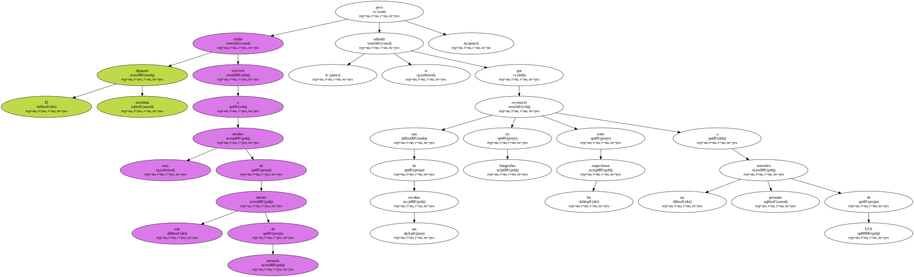Insistió en que quien haya filtrado esta noticia ha actuado " imprudentemente " y dijo que alrededor de la vida de los políticos en el País Vasco hay personas " que sufren con este tipo de informaciones ".
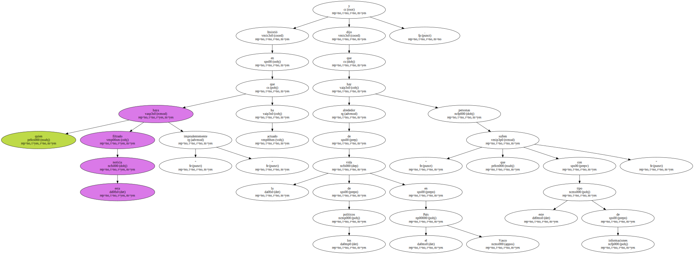Benegas , en declaraciones a los medios de comunicación en el Congreso , aseguró que desconoce de dónde ha partido la noticia , y explicó que desde el año 1977 ha tenido " más problemas " pero manifestó que no le gusta " hacer gala de lo que me ha ocurrido , porque entra dentro de mi trabajo y de mi lucha política por la libertad y por la paz ".
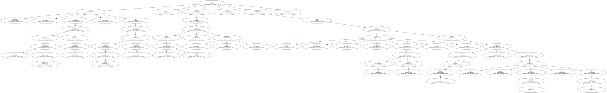" He tenido que enterrar ya a mucha gente , a amigos y compañeros , como para hacer gala de haber tenido un incidente " , dijo Benegas , quien explicó que se limitó a poner el hecho en conocimiento del subdelegado del Gobierno en Guipúzcoa y que su escolta dio parte de lo ocurrido a sus superiores.
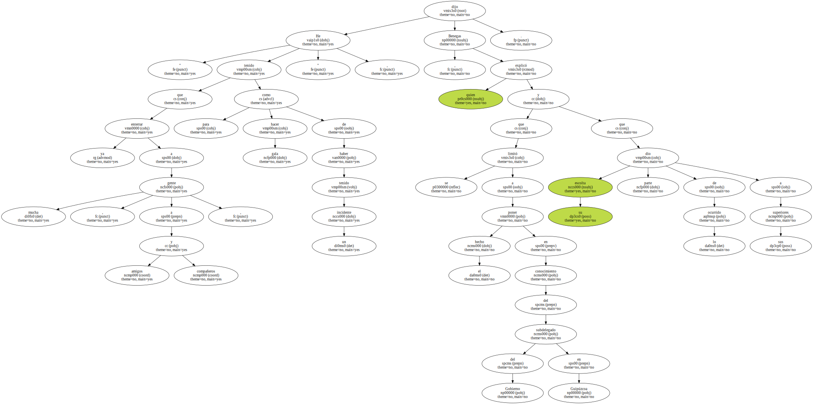El diputado del PSE , quien aseguró que durante las últimas horas ha recibido muchas llamadas , precisó que el incidente ocurrió a las 10:00 horas.
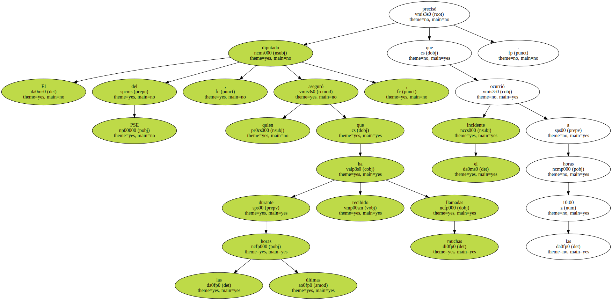Estimó que es " evidente " que durante los últimos meses el PSOE siendo uno de los objetivos de la violencia en el País Vasco , recordó los asesinatos de Fernando Buesa y de José Luis López de Lacalle , y observó que además de estos actos los concejales sufren la " violencia urbana " contra sus casas o los locales que regentan , así como amenazas.

" Esta etapa nos está tocando a nosotros " , dijo Benegas , quien manifestó que el PP sufrió una etapa " terrible " y que muchos ciudadanos ajenos a la política han sido también víctimas de la violencia terrorista.
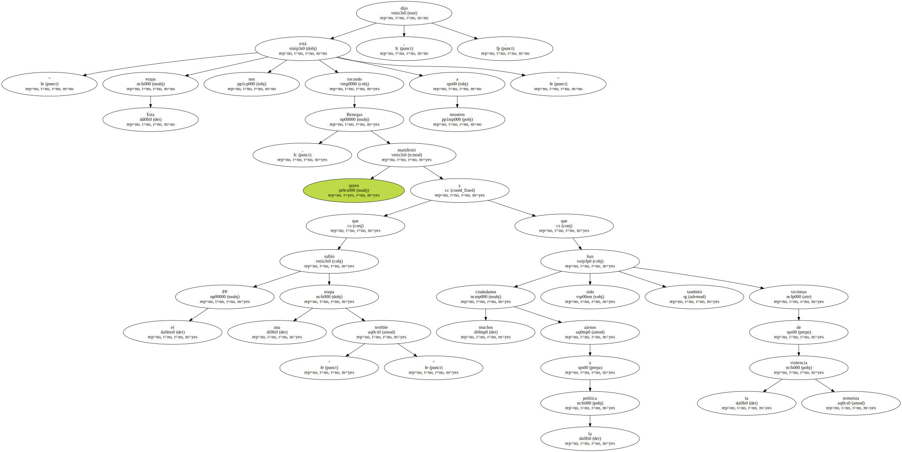Al ser preguntado sobre si ha recibido llamadas del ministro del Interior y de representantes del Gobierno vasco , el diputado socialista aseguró que tiene " cantidad de llamadas que no ha podido atender ".
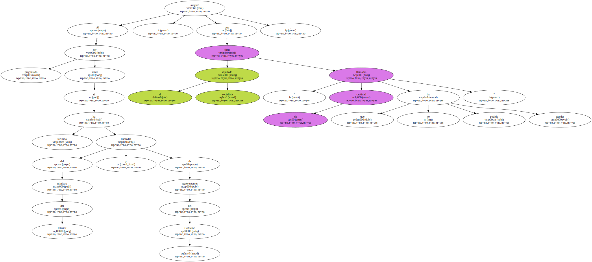Txiqui Benegas afirmó que se encuentra decidido a seguir luchando " por lo que lo he hecho toda mi vida , la paz y la libertad de mi pueblo " , y reclamó , ante la " brutalidad terrorista " , que se reconstruya la unidad democrática y de los partidos " que respetamos el derecho a la vida y a la libertad ".
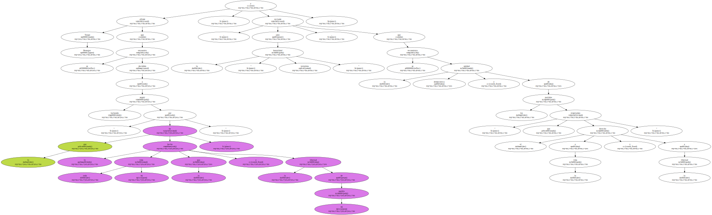Dijo que esa unidad no debe limitarse a convocar concentraciones después de cada desgracia y apostó por definir una estrategia para combatir la violencia , similar a la que se diseñó en el Pacto de Ajuria Enea para combatir el terrorismo.
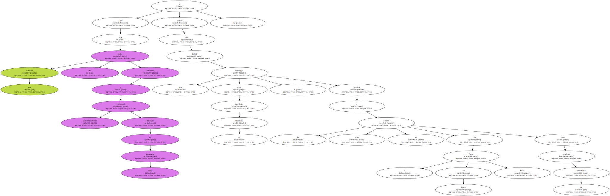Según Benegas , los ciudadanos no entienden que los partidos políticos no sean capaces de ponerse de acuerdo en algo " tan simple como defender el derecho a la vida y a la libertad ".
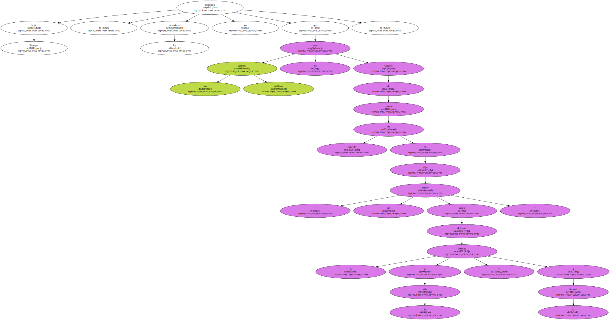Sobre la posibilidad de adelantar las elecciones en el País Vasco , estimó que no es el momento de opinar al respecto , y se limitó a decir que el Gobierno autonómico es " muy débil e inestable " después de que el Ejecutivo se diera cuenta de que era " insostenible " mantener el acuerdo de Gobierno con EH , pero insistió en que corresponde al lehendakari tomar las decisiones que considere oportunas.
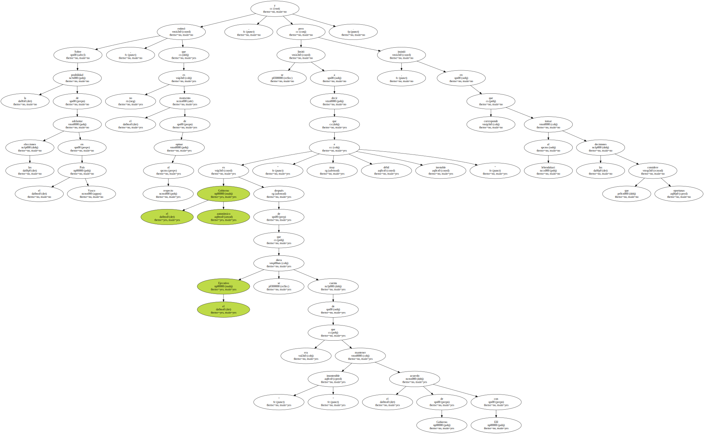